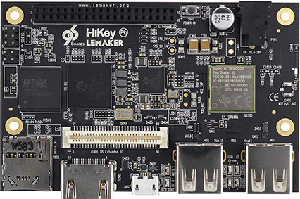

您可以使用 Android 开源项目 (AOSP) 细分版本和针对特定硬件的相关二进制文件来开发适用于 Nexus 设备的细分版本。要查看可用的 Android 细分版本和针对的设备，请参阅源代码、标记和细分版本。
您也可以开发适用于 HiKey Android 参考开发板的细分版本，此类参考开发板旨在协助非 Nexus 组件供应商开发驱动程序并将其移植到各 Android 版本。使用参考开发板可以简化升级工作，缩短将新 Android 设备推向市场所需的时间，降低设备成本（因为使用参考开发板时，原始设计制造商 (ODM)/原始设备制造商 (OEM) 可以从更多兼容组件中进行选择），并加快组件供应商的创新速度。
Google 支持使用经 HiKey960 和 HiKey 认证的 96Boards 作为 Android 参考开发板。AOSP 可为 HiKey 提供内核源代码和开发板支持，这样开发者就能够以更低的原始设备制造商 (OEM) 费用轻松开发和调试新的及现有的外围设备驱动程序、进行内核开发，以及执行其他任务。要开发采用新传感器或 LED 的新 ContextHub 功能，您还可以使用连接到 HiKey 或 HiKey960 开发板的 Neonkey SensorHub。
HiKey960 开发板
HiKey960 开发板由 LeMaker（通过 Amazon.com）和 Lenovator 提供，采用 3GB RAM 配置。

其他资源：
您可以使用以下命令下载、编译 Android 并在 HiKey960 开发板上运行 Android。
编译用户空间
- 下载 Android 源代码树：
repo init -u https://android.googlesource.com/platform/manifest -b masterrepo sync -j24 - 下载二进制文件，并将其解压到 Android 源代码树中：
wget https://dl.google.com/dl/android/aosp/arm-hikey960-OPR-cf4e0c80.tgztar xzf arm-hikey960-OPR-cf4e0c80.tgz./extract-arm-hikey960.sh - 编译：
. ./build/envsetup.shlunch hikey960-userdebugmake -j32
安装初始映像
- 打开开关 1 和 3，从而选择 fastboot 模式（有关详情，请参阅 HiKey960 用户指南）。
- 为开发板接通电源。
- 将初始映像刷到设备上：
cd device/linaro/hikey/installer/hikey960./flash-all.sh - 关闭开关 3，然后重启开发板。
将映像刷到设备上
- 打开开关 1 和 3，从而进入 fastboot 模式。
- 通过运行以下命令将映像刷到设备上：
fastboot flash boot out/target/product/hikey960/boot.imgfastboot flash dts out/target/product/hikey960/dt.imgfastboot flash system out/target/product/hikey960/system.imgfastboot flash cache out/target/product/hikey960/cache.imgfastboot flash userdata out/target/product/hikey960/userdata.img - 关闭开关 3，然后重启开发板。
编译内核
- 运行以下命令：
git clone https://android.googlesource.com/kernel/hikey-linarocd hikey-linarogit checkout -b android-hikey-linaro-4.9 origin/android-hikey-linaro-4.9make ARCH=arm64 hikey960_defconfigmake ARCH=arm64 CROSS_COMPILE=aarch64-linux-android- -j24 - 更新启动映像中的内核。
- 将
hi3660-hikey960.dtb(arch/arm64/boot/dts/hisilicon/hi3660-hikey960.dtb) 复制到hikey-kernel目录，并将其重命名为hi3660-hikey960.dtb-4.9 - 将映像文件
(arch/arm64/boot/Image.gz-dtb) 复制到hikey-kernel目录，并将其重命名为Image.gz-dtb-hikey960-4.9
- 将
- 制作启动映像：
make bootimage -j24
设置序列号
要设置随机序列号，请运行以下命令：
fastboot getvar nve:SN@16_DIGIT_NUMBER
引导加载程序通过 androidboot.serialno= 将生成的序列号导出到内核。
设置显示器分辨率
修改 device/linaro/hikey/hikey960/BoardConfig.mk 参数 BOARD_KERNEL_CMDLINE，并配置 video 设置。
以下是针对 24 英寸显示器的示例设置：video=HDMI-A-1:1280x800@60。
HiKey 开发板
HiKey 开发板（也称为 HiKey620）由 Lenovator 提供，有 1GB RAM 和 2GB RAM 配置可供选择：
其他资源：
您可以使用以下命令下载、编译 Android 并在 HiKey 开发板上运行 Android。
编译用户空间
- 下载 Android 源代码树：
repo init -u https://android.googlesource.com/platform/manifest -b masterrepo sync -j24 - 下载 HDMI 二进制文件，并将其解压到 Android 源代码树中：
wget https://dl.google.com/dl/android/aosp/linaro-hikey-20170523-4b9ebaff.tgztar xzf linaro-hikey-20170523-4b9ebaff.tgz./extract-linaro-hikey.sh - 安装 mcopy 实用工具：
apt-get install mtools
- 编译：
. ./build/envsetup.shlunch hikey-userdebugmake -j32
注意：如果是 4GB eMMC，请不要使用 $ make -j32，而是要使用 $ make -j32 TARGET_USERDATAIMAGE_4GB=true。
安装初始 fastboot 和 ptable
- 连接 J15 1-2 和 3-4 引脚，从而选择特殊的引导加载程序模式（有关详情，请参阅 HiKey 用户指南）。
- 将 USB 连接到 PC，以获取 ttyUSB 设备（例如：
/dev/ttyUSB1）。 - 为开发板接通电源：
cd device/linaro/hikey/installer/hikey./flash-all.sh /dev/ttyUSB1 [4g] - 取下跳线 3-4，并为开发板接通电源。
将映像刷到设备上
- 连接 J15 1-2 和 5-6 引脚，从而进入 fastboot 模式。
- 运行以下命令：
fastboot flash boot out/target/product/hikey/boot.imgfastboot flash -w system out/target/product/hikey/system.img - 取下跳线 5-6，并为开发板接通电源。
编译内核
- 运行以下命令：
git clone https://android.googlesource.com/kernel/hikey-linarocd hikey-linarogit checkout -b android-hikey-linaro-4.9 origin/android-hikey-linaro-4.9make ARCH=arm64 hikey_defconfigmake ARCH=arm64 CROSS_COMPILE=aarch64-linux-android- -j24 - 将输出复制到 HiKey 内核目录 (
/kernel/hikey-linaro)：- 将 hi6220-hikey.dtb (
arch/arm64/boot/dts/hisilicon/hi6220-hikey.dtb) 复制到 HiKey 内核目录，并将其重命名为 hi6220-hikey.dtb-4.9。 - 将映像文件
(arch/arm64/boot/Image-dtb) 复制到 HiKey 内核目录，并将其重命名为 Image-dtb-4.9。
- 将 hi6220-hikey.dtb (
- 制作启动映像：
make bootimage -j24
设置显示器分辨率
修改 device/linaro/hikey/hikey/BoardConfig.mk 参数 BOARD_KERNEL_CMDLINE，并配置 video 设置。
以下是 24 英寸显示器的示例设置：video=HDMI-A-1:1280x800@60。
配置内核串行输出 (uart3)
将 J2 低速扩展连接器设为 1 - Gnd、11 - Rx、13 - Tx。有关详情，请参阅 HiKey 用户指南。
Neonkey SensorHub
要开发采用新传感器或 LED 的新 ContextHub 功能，您可以使用连接到 HiKey 或 Hikey960 开发板的 Neonkey SensorHub。

Neonkey 是 STM32F411CE 上经认证的 96Boards 夹层基础，具有以下组件：
- 压力传感器：BMP280
- ALS/近程传感器：RPR-0521RS
- ARM 霍尔效应传感器：MRMS501A
- 可支持 15 个 LED 的 LED 驱动程序：LP3943
- 加速度计/陀螺仪 + 地磁传感器：BMI160 + BMM150
- 温度/湿度传感器：SI7034-A10
- 4 个 GPIO 驱动的 LED、I2C 扩展、GPIO（2 条线）扩展、JTAG 连接器
- NOR 闪存：512KB
- SRAM：128 KB，96boards LS 扩展连接器
AOSP 可提供内核源代码和 ContextHub 开发板支持，以协助开发者以较低的 OEM 费用开发和调试新传感器、进行新的 HAL 和内核更改，等等。
要编译、启用并上传 Neonkey，请执行以下操作：
- 提取 AOSP 源代码：
repo init -u https://android.googlesource.com/platform/manifest -b master & repo sync -j24
- 编译：
. ./build/envsetup.shlunch hikey-userdebug. device/google/contexthub/firmware/toolchain-setup.shmake -C device/google/contexthub/firmware/variant/neonkeyadb push device/google/contexthub/firmware/out/nanohub/neonkey/full.bin /data/local/tmp - 要启用 Neonkey，请通过以下方法进入启动模式：
- 将 BOOT0 连接到 1V8（连接 JTAG P4 1-5 引脚）
- 按住 USR 按钮
- 按 RST 按钮
- 要上传固件，请运行以下命令：
adb rootadb shell stm32_flash -u -d /dev/ttyAMA2 -e 0xffff -w /data/local/tmp/full.bin - 要编译用户空间 HAL，请运行以下命令：
make TARGET_SENSOR_MEZZANINE=neonkey -j24fastboot flashall